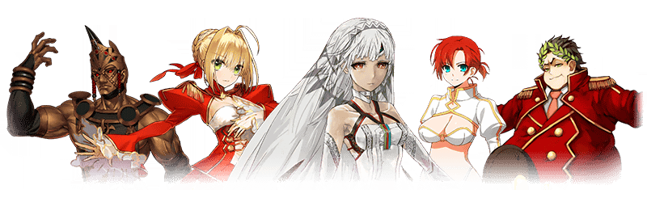
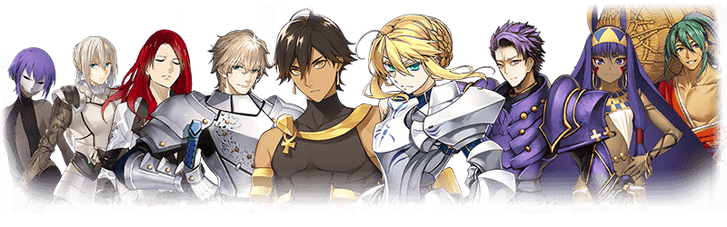
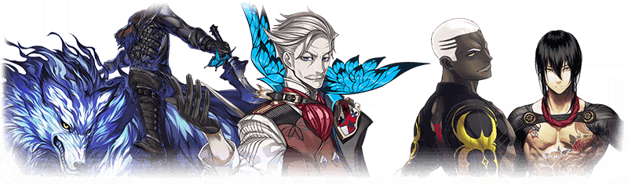
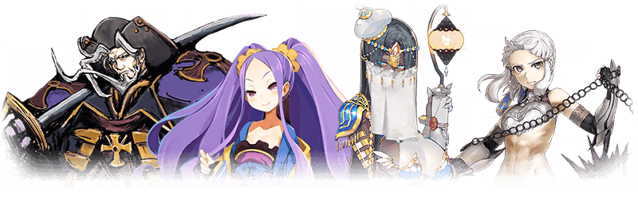
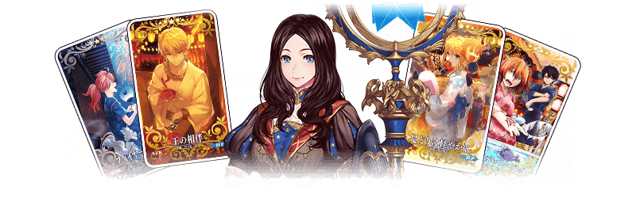
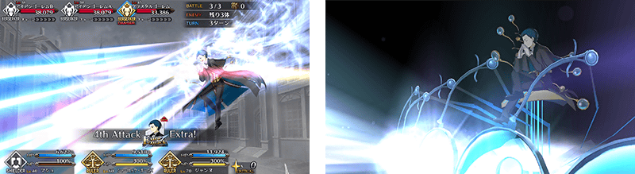
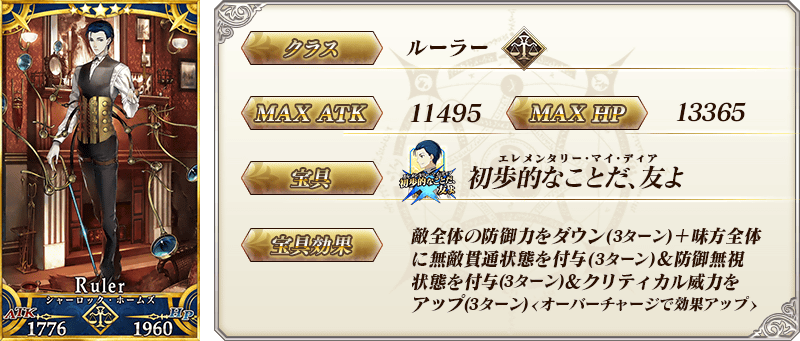
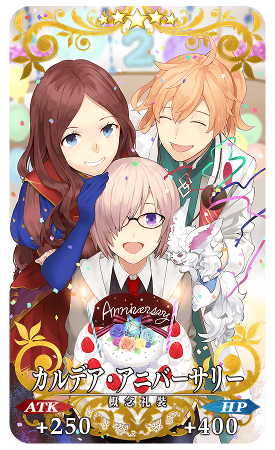
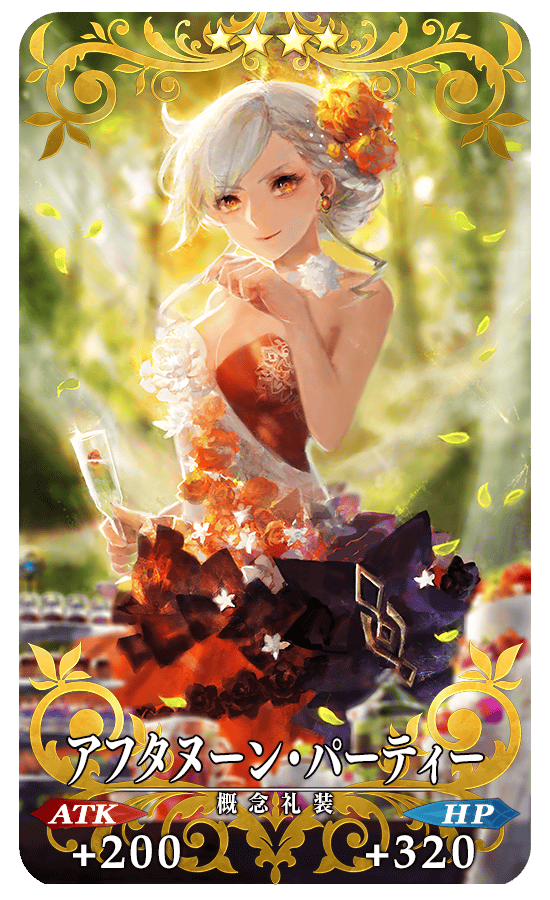
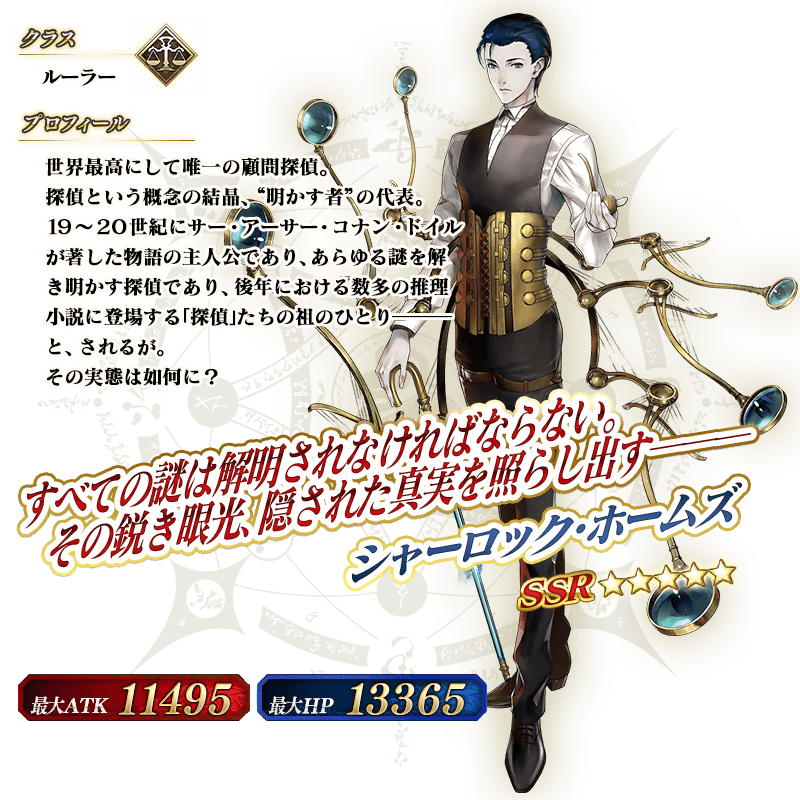

◆「Fate/Grand Order Fes. 2017 ～2nd Anniversary～特異點Pick Up召喚(每日交替)」期間◆
期間:2017年7月30日(日) 12:10～8月9日(三) 11:598月16日(三) 11:59
※延長舉辦期間。
※遊戲內的顯示中會有結束時間未變更的情況。
將會依序對應。
※(8/7修正)
以期間限定舉辦「Fate/Grand Order Fes. 2017 ～2nd Anniversary～特異點Pick Up召喚(每日交替)」！
初登場Servant「★5(SSR)夏洛克・福爾摩斯」以期間限定登場！
另外，為了記念Fate/Grand Order2周年，代表各特異點的Servant們以每日交替Pick Upい！
※終局特異點不在Pick Up的對象外。
期間限定概念禮裝「★5(SSR)カルデア･アニバーサリー」「★4(SR)アフタヌーン･パーティー」「★3(R)スターライト･フェスト」也新登場！
※「★3(R)スターライト･フェスト」在Pick Up期間中，也能在友情點數召喚獲得。
另外，在8月6日(日) 23:00～8月7日(一) 22:59的期間復刻Pick Up於2016年的～1st Anniversary～登場的「★5(SSR)李奧納多・達文西」與"夏祭"相關限定概念禮裝！
「★5(SSR)足どりは軽やかに」「★5(SSR)王の相伴」「★4(SR)ゴールドフィッシュ・スクーピング」「★3(R)ファイヤーフラワー」以期間限定登場！
※8月6日(日) 23:00～8月7日(一) 22:59的Pick Up期間中「★3(R)ファイヤーフラワー」，也能在友情點數召喚獲得。
詳情請在聖晶石召喚畫面左下的召喚詳細確認。
※夏洛克・福爾摩斯、李奧納多・達文西、新宿的Archer在Pick Up期間結束後，不會追加到故事召喚。
Pick Up期間中，期間限定Servant、Pick UpServant、期間限定概念禮裝的出現機率が提升！
8月6日(日) 23:00～8月7日(一) 22:59的期間為在2016年～1st Anniversary～登場的期間限定Servant「★5(SSR)李奧納多・達文西」與期間限定概念禮裝「★5(SSR)足どりは軽やかに」「★5(SSR)王の相伴」「★4(SR)ゴールドフィッシュ・スクーピング 」「★3(R)ファイヤーフラワー」的出現機率提升。
※請注意上述期間不會出現2017年的期間限定概念禮裝。
10次召喚中確定1張★4(SR)以上和確定1位★3(R)以上的Servant！
※確定★4(SR)以上包含Servant和概念禮裝。
※所謂「出現機率提升」意指比同稀有度的Servant及概念禮裝出現機率更高的設定。
| Pick Up期間 | 每日交替Pick 時間表表 |
|---|---|
| 7月30日(日) 12:10～8月1日(二) 22:59 | ･夏洛克・福爾摩斯 |
| 8月1日(二) 23:00～8月2日(三) 22:59 | ･夏洛克・福爾摩斯 ･「特異點F 炎上汙染都市 冬木」 ･「第一特異點 邪龍百年戰爭 奧爾良」 |
| 8月2日(三) 23:00～8月3日(四) 22:59 | ･夏洛克・福爾摩斯 ･「第二特異點 永續狂氣帝國 羅馬七省」 ･「第三特異點 封鎖終局四海 歐開諾斯」 |
| 8月3日(四) 23:00～8月4日(五) 22:59 | ･夏洛克・福爾摩斯 ･「第四特異點 死界魔霧都市 倫敦」 ･「第五特異點 北美神話大戰 合眾為一」 |
| 8月4日(五) 23:00～8月5日(六) 22:59 | ･夏洛克・福爾摩斯 ･「第六特異點 神聖圓桌領域 卡美洛」 ･「第七特異點 絕對魔獸戰線 巴比倫尼亞」 |
| 8月5日(六) 23:00～8月6日(日) 22:59 | ･夏洛克・福爾摩斯 ･「亞種特異點Ⅰ 惡性隔絕魔境 新宿 新宿幻靈事件」 ･「亞種特異點Ⅱ 傳承地底世界 雅戈泰 雅戈泰之女」 |
| 8月6日(日) 23:00～8月7日(一) 22:59 | ･夏洛克・福爾摩斯 ･李奧納多・達文西 ･FGO夏祭2016概念禮裝 |
| 8月7日(一) 23:00～ |
･夏洛克・福爾摩斯 |
※(8/7修正)
※請注意會以每日交替變更Pick Up的Servant。
◆Pick Up對象Servant◆
| 職階 | 稀有度 | 名稱 |
|---|---|---|
| Saber | ★★★★★ | 阿爾托莉亞・潘德拉剛 |
| Saber | ★★★★ | 阿爾托莉亞・潘德拉剛〔Alter〕 |
| Archer | ★★★★ | Emiya |
| Berserker | ★★★★ | 海克力斯 |
| Lancer | ★★★ | 庫・夫林 |
| Rider | ★★★ | 美杜莎 |
| Caster | ★★★ | 庫・夫林 |
| Caster | ★★★ | 美狄亞 |
※未通過特異點F的的狀態也能進行Pick Up召喚。
◆Pick Up對象Servant◆
| 職階 | 稀有度 | 名稱 |
|---|---|---|
| Ruler | ★★★★★ | 貞德 |
| Saber | ★★★★ | 齊格飛 |
| Saber | ★★★★ | 夏爾・德翁 |
| Saber | ★★★ | 吉爾・德・雷 |
| Caster | ★★★ | 吉爾・德・雷 |
| Berserker | ★★★ | 清姬 |
※未通過第一特異點的狀態也能進行Pick Up召喚。
◆Pick Up對象Servant◆

| 職階 | 稀有度 | 名稱 |
|---|---|---|
| Saber | ★★★★★ | 阿提拉 |
| Saber | ★★★★ | 尼祿・克勞狄烏斯 |
| Saber | ★★★ | 蓋烏斯・尤利烏斯・凱撒 |
| Lancer | ★★★ | 羅慕路斯 |
| Rider | ★★★ | 布狄卡 |
※未通過第二特異點的狀態也能進行Pick Up召喚。
◆Pick Up對象Servant◆
| 職階 | 稀有度 | 名稱 |
|---|---|---|
| Rider | ★★★★★ | 弗朗西斯・德雷克 |
| Rider | ★★★★ | 安妮・伯妮＆瑪莉・瑞德 |
| Caster | ★★★★ | 美狄亞〔Lily〕 |
| Archer | ★★★ | 尤瑞艾莉 |
| Archer | ★★★ | 大衛 |
| Lancer | ★★★ | 赫克特 |
※未通過第三特異點的狀態也能進行Pick Up召喚。
◆Pick Up對象Servant◆
| 職階 | 稀有度 | 名稱 |
|---|---|---|
| Saber | ★★★★★ | 莫德雷德 |
| Archer | ★★★★★ | 尼古拉・特斯拉 |
| Lancer | ★★★★ | 阿爾托莉亞・潘德拉剛〔Alter〕 |
| Caster | ★★★★ | 童謠 |
| Berserker | ★★★★ | 弗蘭肯斯坦 |
| Assassin | ★★★ | 亨利・傑基爾＆海德 |
| Caster | ★★★ | 馮・霍恩海姆・帕拉塞爾斯 |
| Caster | ★★★ | 查爾斯・巴貝奇 |
※未通過第四特異點的狀態也能進行Pick Up召喚。
◆Pick Up對象Servant◆
| 職階 | 稀有度 | 名稱 |
|---|---|---|
| Rider | ★★★★★ | 女王梅芙 |
| Berserker | ★★★★★ | 庫・夫林〔Alter〕 |
| Berserker | ★★★★★ | 南丁格爾 |
| Saber | ★★★★ | 羅摩 |
| Lancer | ★★★★ | 李書文 |
| Caster | ★★★★ | 海倫娜・布拉瓦茨基 |
| Caster | ★★★★ | 湯瑪斯・愛迪生 |
| Archer | ★★★ | 比利小子 |
| Caster | ★★★ | 傑羅尼莫 |
※未通過第五特異點的狀態也能進行Pick Up召喚。
◆Pick Up對象Servant◆

| 職階 | 稀有度 | 名稱 |
|---|---|---|
| Lancer | ★★★★★ | 阿爾托莉亞・潘德拉剛 |
| Rider | ★★★★★ | 奧茲曼迪亞斯 |
| Saber | ★★★★ | 高文 |
| Saber | ★★★★ | 蘭斯洛特 |
| Archer | ★★★★ | 崔斯坦 |
| Caster | ★★★★ | 尼托克里絲 |
| Saber | ★★★ | 貝德維爾 |
| Archer | ★★★ | 俵藤太 |
| Assassin | ★★★ | 靜謐的哈桑 |
※未通過第六特異點的狀態也能進行Pick Up召喚。
◆Pick Up對象Servant◆

| 職階 | 稀有度 | 名稱 |
|---|---|---|
| Lancer | ★★★★★ | 恩奇杜 |
| Rider | ★★★★★ | 魁札爾・科亞特爾 |
| Lancer | ★★★★ | 美杜莎 |
| Caster | ★★★★ | 吉爾伽美什 |
| Avenger | ★★★★ | 戈爾貢 |
| Lancer | ★★★ | 豹人 |
※未通過第七特異點的狀態也能進行Pick Up召喚。
◆Pick Up對象Servant◆

| 職階 | 稀有度 | 名稱 |
|---|---|---|
| Archer | ★★★★★ | 新宿的Archer |
| Archer | ★★★★ | Emiya〔Alter〕 |
| Assassin | ★★★★ | 新宿的Assassin |
| Avenger | ★★★★ | 新宿的Avenger |
※未通過亞種特異點Ⅰ的狀態也能進行Pick Up召喚。
◆Pick Up對象Servant◆

| 職階 | 稀有度 | 名稱 |
|---|---|---|
| Caster | ★★★★★ | 不夜城的Caster |
| Assassin | ★★★★ | 不夜城的Assassin |
| Berserker | ★★★★ | 黃金國的Berserker |
| Rider | ★★★ | 反抗軍的Rider |
※未通過亞種特異點Ⅱ的狀態也能進行Pick Up召喚。
◆Pick Up對象Servant＆概念禮裝◆

| 職階 | 稀有度 | 名稱 |
|---|---|---|
| Caster | ★★★★★ | 李奧納多・達文西 |
| 稀有度 | 名稱 |
|---|---|
| ★★★★★ | 足どりは軽やかに |
| ★★★★★ | 王の相伴 |
| ★★★★ | ゴールドフィッシュ・スクーピング |
| ★★★ | ファイヤーフラワー |
Pick Up期間中，在迦勒底之門會現夏洛克・福爾摩斯體驗關卡！
※通過「特異點F 炎上汙染都市 冬木」後開放。
迎接｢★5(SSR)夏洛克・福爾摩斯」做為支援成員，挑戰期間限定的關卡！
別錯過體驗Servant技能與寶具的機會！
◆夏洛克・福爾摩斯體驗關卡舉辦期間◆
2017年7月31日(一) 17:00～8月9日(三) 11:598月16日(三) 11:59
※延長舉辦期間。
※遊戲內的顯示中會有結束時間未變更的情況。
將會依序對應。
※(8/7修正)
※請注意體験關卡與「Fate/Grand Order Fes. 2017 ～2nd Anniversary～特異點Pick Up召喚(每日交替)」的舉辦期間有所差異。
◆關卡通過報酬◆
呼符



|  |
★★★★★SSR |
|  |
★★★★SR |
 |
★★★R |
